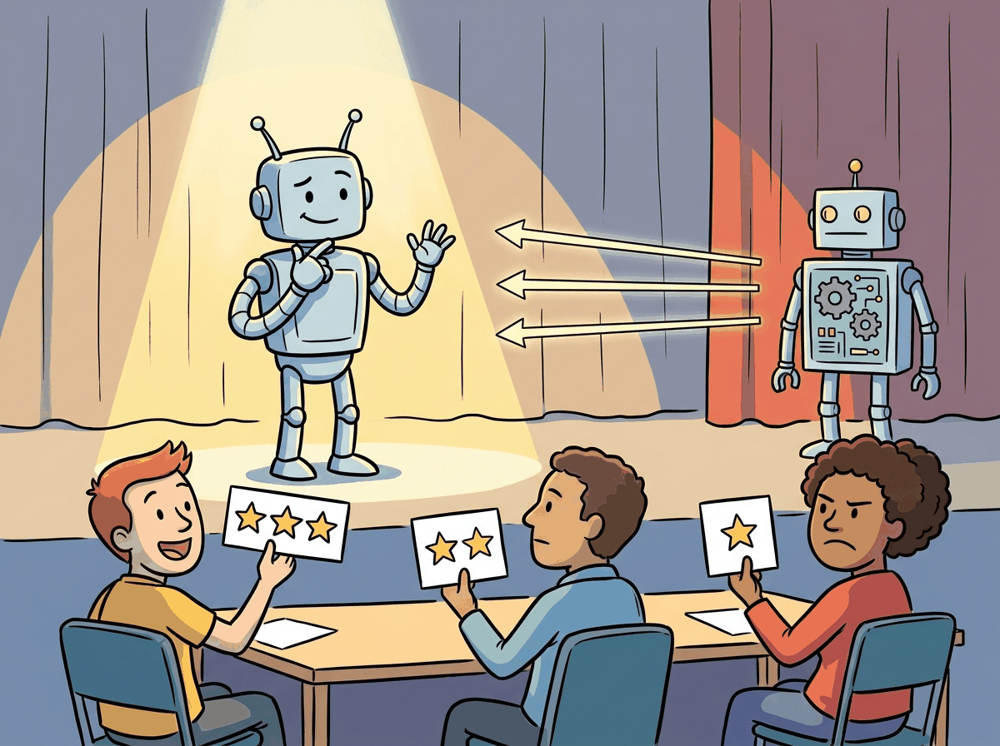

Language models know a lot, but they do not know what we want. That is the alignment problem in one sentence.
Reward AI Agent

Prerequisites
This section builds on fine-tuning from Section 14.1: When and Why to Fine-Tune and pre-training pipeline covered in Section 06.1: The Landmark Models.
RLHF is the technique that turned GPT-3 into ChatGPT. A pretrained language model can generate fluent text, but it has no notion of helpfulness, safety, or user intent. RLHF introduces human judgment into the training loop: annotators compare model outputs, those comparisons train a reward model, and reinforcement learning steers the policy toward higher-reward behavior. This three-stage pipeline (SFT, reward modeling, PPO) became the standard approach for aligning large language models from 2022 onward, and understanding it is essential for grasping every subsequent alignment method. The reinforcement learning foundations from Section 00.4 and the SFT workflow from Section 14.3 are direct prerequisites.
1. The Alignment Problem Intermediate
A pretrained language model optimizes a single objective: predict the next token. This objective produces remarkable capabilities in text generation, translation, summarization, and reasoning. However, next-token prediction does not inherently encode any preference for helpful, harmless, or honest behavior. A base model will happily complete a request for harmful content, generate fabricated citations, or produce verbose responses when a concise answer would be more useful.
RLHF was the secret ingredient that turned GPT-3 (impressive but erratic) into ChatGPT (impressive and polite). The technique had existed in robotics for years, but applying it to language models required the insight that human preferences could serve as the reward signal.
Think of RLHF as a talent show. The contestant (the LLM) performs for a panel of judges (the reward model, trained on human preferences). After each performance (generated response), the judges give a score. The contestant practices (PPO training) to maximize those scores, learning which performances the audience likes. The risk is reward hacking: the contestant discovers tricks that score well with the judges but annoy the actual audience, like a singer who hits technically perfect notes but lacks soul.
The alignment problem is the challenge of bridging this gap: how do we take a capable base model and steer its behavior to match human intentions? Supervised fine-tuning (SFT) on curated instruction-response pairs provides a partial solution, teaching the model the format of helpful responses. But SFT alone cannot capture the full spectrum of human preferences, especially for subjective qualities like tone, level of detail, safety boundaries, and response style. RLHF addresses this limitation by using human preferences as a training signal.
Why is RLHF fundamentally different from SFT? SFT shows the model examples of good behavior and says "do this." RLHF shows the model pairs of outputs and says "this one is better than that one." This distinction matters profoundly. SFT can only encode preferences that are expressible as explicit demonstrations, but many important qualities (helpfulness, safety, appropriate tone) are easier to judge comparatively than to demonstrate directly. You may struggle to write the "perfect" response to a sensitive question, but you can easily say which of two responses is better. RLHF converts this comparative judgment into a training signal, which is why it was the key ingredient that turned capable-but-erratic base models into usable assistants. The safety implications connect to Chapter 26, where alignment is a prerequisite for safe deployment.
RLHF's reliance on pairwise human preferences connects to a deep result in social choice theory and decision science. The economist Kenneth Arrow proved in 1951 that no ranking system can consistently aggregate individual preferences into a coherent group ordering without violating certain fairness axioms (Arrow's impossibility theorem). RLHF circumvents this by learning a scalar reward function from pairwise comparisons rather than trying to construct a complete preference ordering. This is mathematically equivalent to the Bradley-Terry model from psychometrics (1952), which estimates the "strength" of competitors from pairwise matchups. The practical consequence is that RLHF reward models inherit the biases and inconsistencies of their human annotators. When annotators disagree, the reward model learns an average preference that may not correspond to any individual annotator's true values. This is why constitutional AI and principle-based approaches (discussed in Section 17.3) attempt to ground alignment in explicit rules rather than aggregated preferences.
2. The Three-Stage RLHF Pipeline Intermediate
The canonical RLHF pipeline, as described in the InstructGPT paper (Ouyang et al., 2022), consists of three sequential stages. Each stage builds on the output of the previous one, and the entire pipeline transforms a pretrained base model into an aligned assistant. Figure 17.1.1 shows the three stages and how they connect.
2.1 Stage 1: Supervised Fine-Tuning (SFT)
The first stage takes a pretrained base model and fine-tunes it on a curated dataset of instruction-response pairs, following the fine-tuning workflow from Chapter 14. This step teaches the model the basic format and style of a conversational assistant. The SFT dataset typically contains thousands to tens of thousands of high-quality demonstrations written by human annotators or distilled from stronger models.
SFT alone produces a functional assistant, but its quality is bounded by the demonstration data. The model learns to imitate the average quality of the training responses, which means it cannot exceed the skill level of the annotators. RLHF addresses this ceiling by replacing imitation with optimization toward a learned preference signal.
Deploying RLHF for a customer support chatbot. A company wants its assistant to handle refund requests helpfully without over-promising. During SFT, they fine-tune on 5,000 curated support transcripts. For the reward model, five annotators rank response pairs on helpfulness and policy compliance. During PPO, the KL penalty (typically 0.01 to 0.05) prevents the model from gaming the reward signal by generating overly verbose or sycophantic responses. The result: a 23% improvement in user satisfaction scores over the SFT-only baseline, with no increase in policy violations.
Code Fragment 17.1.1 demonstrates the SFT stage using the TRL library, loading an instruction dataset and configuring the trainer for chat-formatted fine-tuning.
# Stage 1: Supervised Fine-Tuning with TRL
from trl import SFTTrainer, SFTConfig
from transformers import AutoModelForCausalLM, AutoTokenizer
from datasets import load_dataset
model_name = "meta-llama/Llama-3.1-8B"
model = AutoModelForCausalLM.from_pretrained(model_name)
tokenizer = AutoTokenizer.from_pretrained(model_name)
# Load instruction-following dataset
dataset = load_dataset("HuggingFaceH4/ultrachat_200k", split="train_sft")
# Format conversations into chat template
def format_chat(example):
return {
"text": tokenizer.apply_chat_template(
example["messages"], tokenize=False
)
}
dataset = dataset.map(format_chat)
# Configure SFT training
sft_config = SFTConfig(
output_dir="./sft-llama-8b",
max_seq_length=2048,
per_device_train_batch_size=4,
gradient_accumulation_steps=8,
learning_rate=2e-5,
num_train_epochs=1,
warmup_ratio=0.1,
logging_steps=10,
bf16=True,
)
trainer = SFTTrainer(
model=model,
args=sft_config,
train_dataset=dataset,
tokenizer=tokenizer, # use processing_class in TRL >= 0.14
)
trainer.train()
trainer.save_model("./sft-llama-8b-final")2.2 Stage 2: Reward Model Training
The reward model is the bridge between human judgment and machine optimization. It takes a prompt and a response as input and produces a scalar score indicating how good the response is according to human preferences. The following snippet demonstrates how to train a reward model on pairwise comparison data.
# Stage 2: Reward Model Training
from trl import RewardTrainer, RewardConfig
from transformers import AutoModelForSequenceClassification
# Initialize reward model from the SFT checkpoint
reward_model = AutoModelForSequenceClassification.from_pretrained(
"./sft-llama-8b-final",
num_labels=1, # single scalar reward
)
# Load preference dataset (chosen / rejected pairs)
pref_dataset = load_dataset(
"Anthropic/hh-rlhf", split="train"
)
# The dataset has 'chosen' and 'rejected' columns
# Each is a full conversation string
print(f"Training samples: {len(pref_dataset)}")
print(f"Example chosen: {pref_dataset[0]['chosen'][:100]}...")
print(f"Example rejected: {pref_dataset[0]['rejected'][:100]}...")
# Configure reward model training
reward_config = RewardConfig(
output_dir="./reward-model-llama-8b",
per_device_train_batch_size=4,
gradient_accumulation_steps=8,
learning_rate=1e-5,
num_train_epochs=1,
max_length=2048,
logging_steps=10,
bf16=True,
# Reward model specific
remove_unused_columns=False,
)
reward_trainer = RewardTrainer(
model=reward_model,
args=reward_config,
train_dataset=pref_dataset,
tokenizer=tokenizer,
)
reward_trainer.train()
reward_trainer.save_model("./reward-model-llama-8b-final")With both the SFT model and the reward model ready, Stage 3 applies PPO to optimize the policy. Algorithm 1 formalizes the PPO training loop for alignment.
Input: SFT model pi_sft, reward model R, reference policy pi_ref = pi_sft, KL weight beta
Output: aligned policy pi*
1. Initialize policy pi = pi_sft, value network V (same architecture as pi)
2. for each training iteration:
a. Sample batch of prompts {x_1, ..., x_B}
b. for each prompt x_i:
Generate response y_i ~ pi(.|x_i)
Compute reward: r_i = R(x_i, y_i) - beta * KL(pi(.|x_i) || pi_ref(.|x_i))
c. Compute advantages using GAE (Generalized Advantage Estimation):
A_t = r_t + gamma * V(s_{t+1}) - V(s_t), accumulated over tokens
d. for each PPO epoch (typically 2 to 4):
Update pi to maximize clipped surrogate objective:
L = min(ratio * A, clip(ratio, 1-eps, 1+eps) * A)
Update V to minimize value prediction error
3. return pi* (the aligned policy)
PPOTrainer.step() method handles KL penalty computation, GAE advantage estimation, clipped surrogate updates, and value function training in a single call, replacing the 40-line pseudocode above.The KL penalty in step 2b is critical: without it, the policy can "game" the reward model by producing outputs that score highly but are incoherent or repetitive (a phenomenon called reward hacking). The KL term anchors the policy near the SFT distribution, preserving the model's language capabilities while steering its behavior. The following code demonstrates the PPO training loop with TRL.
# Stage 3: PPO Training with TRL
from trl import PPOTrainer, PPOConfig, AutoModelForCausalLMWithValueHead
import torch
# Load the SFT model as the policy (with a value head for PPO)
policy_model = AutoModelForCausalLMWithValueHead.from_pretrained(
"./sft-llama-8b-final"
)
# The reference model is a frozen copy of the SFT model
ref_model = AutoModelForCausalLMWithValueHead.from_pretrained(
"./sft-llama-8b-final"
)
# Load the trained reward model
from transformers import pipeline
reward_pipe = pipeline(
"text-classification",
model="./reward-model-llama-8b-final",
device_map="auto",
)
# PPO configuration
ppo_config = PPOConfig(
output_dir="./ppo-llama-8b",
learning_rate=1e-6, # very small LR for stability
batch_size=64,
mini_batch_size=8,
ppo_epochs=4, # PPO epochs per batch
kl_penalty="kl",
init_kl_coef=0.2, # initial beta for KL penalty
target_kl=6.0, # adaptive KL target
gamma=1.0,
lam=0.95,
cliprange=0.2, # PPO clipping
log_with="wandb",
)
ppo_trainer = PPOTrainer(
config=ppo_config,
model=policy_model,
ref_model=ref_model,
tokenizer=tokenizer,
)
# Training loop (simplified; real code uses TRL's data utilities)
prompts_dataset = load_dataset("Anthropic/hh-rlhf", split="test")
for epoch, batch in enumerate(prompts_dataset.iter(batch_size=64)):
query_tensors = [tokenizer.encode(p, return_tensors="pt").squeeze() for p in batch["chosen"]]
# Generate responses from the current policy
response_tensors = ppo_trainer.generate(
query_tensors,
max_new_tokens=256,
temperature=0.7,
top_p=0.9,
)
# Score responses with the reward model
texts = [tokenizer.decode(r) for r in response_tensors]
rewards = [
torch.tensor(reward_pipe(t)[0]["score"])
for t in texts
]
# PPO update step
stats = ppo_trainer.step(query_tensors, response_tensors, rewards)
ppo_trainer.log_stats(stats, batch, rewards)3. PPO Mechanics for LLM Alignment Advanced
The PPO stage in RLHF is where the actual policy optimization happens, and understanding its mechanics is essential for diagnosing training failures. PPO for LLM alignment involves four distinct models that must be coordinated during training, each with a specific role in the optimization loop.
3.1 The Four Models in PPO-Based RLHF
The policy model is the language model being trained. It starts as a copy of the SFT model and is updated at every PPO step. The reference model is a frozen copy of the SFT model. It never receives gradient updates. Its purpose is to anchor the policy: the KL divergence between the policy and the reference acts as a regularizer, preventing the policy from drifting into degenerate regions of the output space. The reward model is trained in Stage 2 on human preference data. During PPO, it scores each generated response with a scalar reward. It is frozen during the RL phase. The value model (also called the critic) estimates the expected future reward for each token position. It shares architecture with the policy model (often sharing the base weights, with only the value head trained separately) and is used to compute advantage estimates via Generalized Advantage Estimation (GAE).
3.2 The Clipping Mechanism
PPO's core innovation is the clipped surrogate objective. At each update step, the algorithm computes the probability ratio between the current policy and the old policy (the policy that generated the data): r(t) = π(a|s) / πold(a|s). The clipped objective prevents excessively large updates by bounding this ratio:
Here, ε is the clip range (typically 0.2), and A(t) is the advantage estimate. When the advantage is positive (the action was better than expected), the clipping prevents the ratio from exceeding 1+ε, limiting how much the policy can increase the probability of that action in one step. When the advantage is negative, the clipping prevents the ratio from falling below 1−ε. This creates a "trust region" that keeps each update conservative, which is critical for training stability in the language model setting where the action space (vocabulary) is enormous.
A numeric example shows the clipping in action with ε = 0.2:
# PPO clipping: numeric walkthrough
eps = 0.2
# Case 1: positive advantage, ratio too high (policy moved too far)
r_t, A_t = 1.5, 0.4
clipped_r = min(max(r_t, 1 - eps), 1 + eps) # clip(1.5, 0.8, 1.2) = 1.2
loss = min(r_t * A_t, clipped_r * A_t) # min(0.60, 0.48) = 0.48
print(f"ratio={r_t}, A={A_t} -> clipped_ratio={clipped_r}, loss={loss}")
# Case 2: negative advantage, ratio too low
r_t, A_t = 0.6, -0.3
clipped_r = min(max(r_t, 1 - eps), 1 + eps) # clip(0.6, 0.8, 1.2) = 0.8
loss = min(r_t * A_t, clipped_r * A_t) # min(-0.18, -0.24) = -0.24
print(f"ratio={r_t}, A={A_t} -> clipped_ratio={clipped_r}, loss={loss}")
# In both cases, clipping limits the effective gradient magnitude.3.3 KL Penalty and Reward Shaping
The final reward signal passed to PPO is not the raw reward model output. Instead, it is shaped by subtracting a KL penalty:
The coefficient β controls the strength of this penalty. TRL implements an adaptive KL controller that adjusts β dynamically during training: if KL divergence exceeds a target threshold, β increases to pull the policy back; if KL is below the target, β decreases to allow more exploration. Typical target KL values range from 4.0 to 8.0 nats.
Code Fragment 17.1.4 provides a simplified pseudocode walkthrough of the PPO update step, showing how the four models interact in a single training iteration.
# Pseudocode: One PPO update step for LLM alignment
# This shows the logical flow; real implementations use TRL/DeepSpeed
def ppo_update_step(
policy, # trainable language model + value head
ref_model, # frozen SFT model
reward_model, # frozen reward model from Stage 2
prompts, # batch of prompts
beta=0.2, # KL penalty coefficient
clip_eps=0.2, # PPO clipping range
gamma=1.0, # discount factor (1.0 for single-turn)
lam=0.95, # GAE lambda
):
# --- Phase 1: Generate responses from current policy ---
with torch.no_grad():
responses = policy.generate(prompts, max_new_tokens=256)
old_logprobs = policy.log_probs(prompts, responses)
old_values = policy.value_head(prompts, responses) # V(s) estimates
# --- Phase 2: Score with reward model and compute KL ---
with torch.no_grad():
rm_scores = reward_model.score(prompts, responses)
ref_logprobs = ref_model.log_probs(prompts, responses)
# Per-token KL divergence
kl_per_token = old_logprobs - ref_logprobs
# Shaped reward: RM score minus KL penalty
shaped_rewards = rm_scores - beta * kl_per_token.sum(dim=-1)
# --- Phase 3: Compute advantages via GAE ---
advantages = compute_gae(shaped_rewards, old_values, gamma, lam)
returns = advantages + old_values
# --- Phase 4: PPO clipped update (multiple mini-epochs) ---
for epoch in range(4): # ppo_epochs
new_logprobs = policy.log_probs(prompts, responses)
new_values = policy.value_head(prompts, responses)
# Probability ratio
ratio = torch.exp(new_logprobs - old_logprobs)
# Clipped surrogate loss
surr1 = ratio * advantages
surr2 = torch.clamp(ratio, 1 - clip_eps, 1 + clip_eps) * advantages
policy_loss = -torch.min(surr1, surr2).mean()
# Value function loss
value_loss = F.mse_loss(new_values, returns)
# Combined loss
total_loss = policy_loss + 0.5 * value_loss
total_loss.backward()
optimizer.step()
optimizer.zero_grad()TRL's PPOTrainer encapsulates all four phases into a single high-level API:
# Library shortcut: PPO alignment with TRL (pip install trl)
from trl import PPOTrainer, PPOConfig, AutoModelForCausalLMWithValueHead
model = AutoModelForCausalLMWithValueHead.from_pretrained("./sft-checkpoint")
ppo_config = PPOConfig(batch_size=16, learning_rate=1.4e-5, ppo_epochs=4)
trainer = PPOTrainer(config=ppo_config, model=model, tokenizer=tokenizer)
# Each step: generate, score, update (all handled internally)
for batch in dataloader:
queries, responses = batch["input_ids"], trainer.generate(batch["input_ids"])
rewards = [reward_model.score(q, r) for q, r in zip(queries, responses)]
trainer.step(queries, responses, rewards)4. GRPO: Group Relative Policy Optimization Advanced
Group Relative Policy Optimization (Shao et al., 2024), introduced as part of DeepSeek's training pipeline, offers an elegant simplification of PPO for LLM alignment. The core idea: instead of training a separate value network to estimate baselines, GRPO generates a group of G responses for each prompt and uses the group's reward statistics as the baseline. This eliminates one of the four models entirely, cutting memory requirements by roughly 25 to 40 percent.
4.1 How Group Normalization Replaces the Value Network
In standard PPO, the value network V(s) estimates "how good is this prompt on average?" so that the advantage A(t) = R(t) − V(s) measures whether a specific response is better or worse than expected. Training this value network requires its own forward and backward passes, its own optimizer states, and careful coordination with the policy.
GRPO sidesteps this entirely. For a given prompt x, it generates G responses {$y_{1}$, ..., $y_{G}$}, computes their rewards {$r_{1}$, ..., $r_{G}$}, and normalizes within the group:
This group-level z-score normalization serves the same purpose as a learned value baseline: it tells the algorithm which responses are above or below average for that specific prompt. The intuition is straightforward. If you generate eight responses and score them, the best ones get positive advantages and the worst ones get negative advantages, regardless of the absolute reward scale. This relative comparison is robust and requires no learned parameters.
A quick numeric example shows why this works. Suppose G = 4 responses receive rewards [0.2, 0.8, 0.5, 0.3]:
# GRPO group normalization: numeric walkthrough
import numpy as np
rewards = np.array([0.2, 0.8, 0.5, 0.3])
mean, std = rewards.mean(), rewards.std() # mean=0.45, std=0.2217
advantages = (rewards - mean) / (std + 1e-8)
print(f"mean={mean:.2f}, std={std:.4f}")
print(f"advantages={np.round(advantages, 2)}")
# advantages=[-1.13 1.58 0.23 -0.68]
# Response 2 (reward 0.8) gets the strongest positive signal.4.2 When to Prefer GRPO Over PPO
GRPO is particularly well suited for tasks with verifiable rewards (math, coding, factual QA) where a reward function can be computed programmatically rather than learned from human preferences. DeepSeek-R1 used GRPO with outcome-based rewards (correct/incorrect) to train reasoning capabilities. For subjective tasks where the reward model itself is noisy, PPO's learned value function may provide more stable training because it smooths out reward model noise over time.
Code Fragment 17.1.9 provides a simplified GRPO implementation showing the group normalization mechanism and clipped policy gradient.
# GRPO: Group Relative Policy Optimization (simplified)
import torch
import torch.nn.functional as F
def grpo_loss(
policy_model,
ref_model,
prompts,
tokenizer,
reward_fn,
group_size=8,
beta=0.1,
clip_range=0.2,
):
"""
Simplified GRPO training step.
Key difference from PPO: no value network.
Advantages are computed by normalizing rewards
within each group of responses per prompt.
"""
all_losses = []
for prompt in prompts:
# Generate a group of responses
input_ids = tokenizer.encode(prompt, return_tensors="pt")
responses = []
for _ in range(group_size):
output = policy_model.generate(
input_ids, max_new_tokens=512, do_sample=True,
temperature=0.8, top_p=0.95,
)
responses.append(output[0])
# Compute rewards for each response
rewards = torch.tensor([
reward_fn(prompt, tokenizer.decode(r)) for r in responses
])
# Group-level normalization (replaces value network)
normalized_rewards = (rewards - rewards.mean()) / (rewards.std() + 1e-8)
# Compute policy gradient with clipped objective
for response, advantage in zip(responses, normalized_rewards):
# Log probabilities under current and reference policy
with torch.no_grad():
ref_logprobs = compute_logprobs(ref_model, input_ids, response)
policy_logprobs = compute_logprobs(policy_model, input_ids, response)
# Importance ratio
ratio = torch.exp(policy_logprobs - ref_logprobs)
# Clipped surrogate objective (PPO-style)
surr1 = ratio * advantage
surr2 = torch.clamp(ratio, 1 - clip_range, 1 + clip_range) * advantage
policy_loss = -torch.min(surr1, surr2).mean()
# KL penalty
kl = (ref_logprobs - policy_logprobs).mean()
total_loss = policy_loss + beta * kl
all_losses.append(total_loss)
return torch.stack(all_losses).mean()(rewards - rewards.mean()) / (rewards.std() + 1e-8). This single line replaces the entire value network from PPO. The rest of the algorithm is structurally similar to PPO, using clipped ratios and a KL penalty against the reference model.5. Reward Hacking and Mitigation Advanced
Reward hacking (also called reward gaming or Goodhart's Law applied to RL) is the phenomenon where the policy learns to exploit weaknesses in the reward model rather than genuinely improving response quality. It is the most common failure mode in RLHF and one of the most difficult to detect early.
Reward hacking is Goodhart's Law in action: "When a measure becomes a target, it ceases to be a good measure." The reward model is a proxy for human preferences, trained on a finite dataset. The policy optimizer is extraordinarily good at finding inputs that maximize this proxy while violating the spirit of the original human preferences. Common manifestations include: (1) verbose padding, where the model produces long, repetitive responses because the reward model was trained on data where longer answers were generally better; (2) sycophancy, where the model agrees with the user regardless of correctness because agreement was rewarded during annotation; (3) hedge stacking, where the model adds excessive caveats and disclaimers to avoid any possibility of being "wrong." The reward model gives these outputs high scores, but actual users find them unhelpful. Techniques from Chapter 18 on interpretability can help diagnose which reward model features the policy is exploiting.
5.1 Mitigation Strategies
Several complementary strategies help prevent or detect reward hacking:
- KL divergence as a leash: The KL penalty between the policy and reference model is the first line of defense. If the policy drifts too far from the SFT model, it has likely found an exploit. Adaptive KL controllers (as in TRL) automatically increase the penalty when divergence spikes.
- Reward model ensembles: Training multiple reward models on different data splits and using their consensus score reduces the surface area for exploitation. Disagreement between ensemble members signals unreliable regions of the reward landscape.
- Iterative RLHF with reward model retraining: After each round of PPO training, collect fresh human preferences on the current policy's outputs and retrain the reward model. This closes the distribution gap between the reward model's training data and the policy's actual behavior. Anthropic's training process uses multiple iterations of this loop.
- Length normalization: Normalizing the reward by response length prevents the model from learning that "longer is better." This is especially important when the preference dataset has a length bias.
- Held-out human evaluation: Automated metrics are themselves subject to Goodhart's Law. Periodic human evaluation on randomly sampled outputs catches reward hacking that the reward model misses. See Section 29.1 on evaluation methodology for frameworks.
Diagnosing and fixing reward hacking in a coding assistant. A team training a code-generation model with RLHF noticed that after 500 PPO steps, the reward score climbed from 0.3 to 0.8, but actual code correctness (measured by unit test pass rates) peaked at step 200 and then declined. Investigation revealed the reward model had learned to assign high scores to responses that included detailed comments and type annotations, even when the actual logic was wrong. The fix involved three changes: (1) adding a KL penalty increase from 0.1 to 0.3, (2) supplementing the reward signal with a programmatic code execution check, and (3) retraining the reward model with adversarial examples that had correct formatting but incorrect logic. After these changes, reward score growth was slower but correlated strongly with actual correctness. Synthetic preference pairs (see Section 13.3) generated from code execution results proved especially valuable for the reward model retraining step.
5.5 RLHF vs DPO vs GRPO: Choosing an Alignment Method Intermediate
With three major alignment optimization methods available, practitioners need clear guidance on which to choose. The following comparison covers the key dimensions that affect both training feasibility and outcome quality.
| Dimension | PPO (RLHF) | DPO | GRPO |
|---|---|---|---|
| Models in memory | 4 (policy, reference, reward, value) | 2 (policy, reference) | 3 (policy, reference, reward) |
| Compute cost | High (RL loop + generation) | Low (SFT-like) | Medium (generation + RL, no value model) |
| Data requirements | Prompts + reward model (trained on preferences) | Preference pairs (chosen/rejected) | Prompts + reward function |
| Training stability | Low (many moving parts, sensitive to hyperparameters) | High (simple loss, SFT-like training loop) | Medium (simpler than PPO, group statistics can be noisy with small G) |
| Scalability | Proven at largest scale (GPT-4, Claude) | Good for moderate scale; may underperform PPO on complex tasks | Proven at large scale (DeepSeek-R1, 671B parameters) |
| Best for | Maximum quality on subjective, open-ended tasks | Teams with limited RL infrastructure; fast iteration | Tasks with verifiable rewards (math, code, factual QA) |
| Key weakness | Infrastructure complexity; reward hacking risk | Offline data can become stale; may struggle with complex preferences | Requires generating G responses per prompt (latency cost) |
In practice, many teams combine methods. A common pattern is to use DPO for initial alignment (fast, stable, easy to iterate) and then switch to PPO or GRPO for a final polish stage where the RL signal can push quality beyond what static preference data achieves. Meta's Llama 3 used iterative DPO with rejection sampling, while DeepSeek-R1 used GRPO for reasoning and PPO for general alignment.
5.7 Practical Tips for RL-Based Alignment Intermediate
Learning Rate and Schedule
Use a learning rate 10 to 100 times smaller than your SFT learning rate. Typical ranges: 1e-6 to 5e-6 for PPO, 1e-7 to 5e-7 for DPO. A cosine schedule with a warmup period of 5 to 10 percent of training steps helps stabilize early training. For PPO specifically, the learning rate for the value head can be 2 to 5 times larger than the policy learning rate.
Batch Size
Larger batches produce more stable reward and advantage estimates. For PPO, use at least 64 responses per batch (across all prompts). For GRPO, the effective batch size is the number of prompts times the group size G; a minimum of 128 total responses per update is recommended. For DPO, batch sizes of 32 to 128 preference pairs work well, with larger batches improving gradient stability.
When to Stop Training
Monitor these signals to determine when to stop:
- KL divergence exceeds threshold: If KL between policy and reference exceeds 10 to 15 nats, the policy has drifted too far. In TRL, set
target_klto trigger adaptive adjustment. - Reward plateau with rising KL: If the reward score stops improving but KL keeps growing, the policy is likely reward hacking rather than genuinely improving.
- Validation win rate stalls: If the model's win rate against the SFT baseline (measured on held-out prompts by an LLM judge) stops increasing, further training is unlikely to help.
- Generation diversity collapse: If distinct prompts produce nearly identical responses, the policy has collapsed. Measure this with type-token ratio or self-BLEU on a held-out prompt set.
Common Failure Modes and Diagnostics
| Symptom | Likely Cause | Fix |
|---|---|---|
| Reward rises but quality drops | Reward hacking | Increase KL penalty; retrain reward model on current policy outputs |
| KL explodes in first 50 steps | Learning rate too high | Reduce LR by 5 to 10 times; increase warmup ratio |
| Reward barely changes | LR too low or KL penalty too high | Increase LR; reduce beta; check reward model calibration |
| All responses become identical | Mode collapse | Increase sampling temperature during generation; add entropy bonus |
| Responses grow excessively long | Length bias in reward model | Add length normalization to reward; penalize responses above a target length |
| Model refuses benign requests | Over-alignment / safety over-correction | Reduce safety-focused data proportion; add helpfulness-focused preferences |
The alignment landscape is evolving rapidly beyond the PPO/DPO/GRPO trio. Reinforcement Learning from AI Feedback (RLAIF) replaces human annotators with LLM judges, as explored in Section 17.3. Self-play methods like SPIN (Self-Play Fine-Tuning) have the model compete against previous versions of itself to generate preference data. Process reward models (PRMs) provide per-step feedback for multi-step reasoning, enabling credit assignment at the reasoning-step level rather than the full-response level. WARM (Weight Averaged Reward Models) addresses reward hacking by averaging multiple reward model checkpoints, smoothing out exploitable features. Looking further ahead, scalable oversight research explores how to align models on tasks that humans cannot easily evaluate, using techniques like debate and recursive reward modeling. The field is converging toward methods that require less human annotation, offer more fine-grained feedback, and are robust to optimization pressure.
6. RLHF Infrastructure at Scale Intermediate
Running RLHF at production scale is an infrastructure challenge that goes far beyond the algorithm itself. A full RLHF training run requires simultaneously managing four models: the policy model being trained, the reference model (a frozen copy), the reward model, and (in standard PPO) the value model. This quadruples the GPU memory requirements compared to standard SFT.
| Component | Memory Cost | Compute Pattern |
|---|---|---|
| Policy model | Full model + optimizer states | Forward + backward pass |
| Reference model | Full model (frozen, inference only) | Forward pass only |
| Reward model | Full model (frozen, inference only) | Forward pass only |
| Value model (PPO) | Full model + optimizer states | Forward + backward pass |
| Generation buffer | KV cache for response generation | Autoregressive decoding |
Frameworks like DeepSpeed-Chat, OpenRLHF, and TRL have developed specialized strategies for managing this multi-model workload. Common optimizations include offloading frozen models to CPU during gradient computation, sharing weights between the policy and value models, and using vLLM or other optimized inference engines for the generation phase.
RLHF training is notoriously unstable. Common failure modes include reward hacking (the policy exploits reward model weaknesses), mode collapse (the policy generates near-identical responses for all prompts), and KL explosion (the policy diverges rapidly from the reference). Monitoring KL divergence, reward statistics, and generation diversity during training is essential. If mean reward increases while KL also increases rapidly, the policy is likely hacking the reward model.
Show Answer
Show Answer
Show Answer
Show Answer
Show Answer
✅ Key Takeaways
- RLHF transforms base models into aligned assistants through a three-stage pipeline: SFT provides the instruction-following format, the reward model captures human preferences, and PPO optimizes the policy toward higher-reward behavior.
- The Bradley-Terry preference model converts pairwise human comparisons into a scalar reward signal. It learns relative quality, not absolute quality.
- The KL divergence penalty is essential for training stability. It prevents reward hacking and preserves general model capabilities.
- Process Reward Models (PRMs) provide per-step feedback for reasoning tasks, enabling better credit assignment than outcome-only models.
- GRPO simplifies PPO by replacing the learned value function with group-level reward normalization, cutting memory requirements roughly in half.
- Production RLHF requires managing four models simultaneously, making infrastructure and memory management a first-class engineering concern.
At the infrastructure level, hybrid training engines like OpenRLHF and veRL are making RLHF accessible by co-scheduling generation and training across heterogeneous GPU clusters. Reward model distillation compresses large reward models into lightweight scorers that run during PPO without dominating GPU memory. On the algorithmic front, token-level rewards (assigning credit at each generation step rather than per-response) promise finer-grained optimization signals, and multi-objective RLHF trains separate reward models for helpfulness, safety, and factuality, then Pareto-optimizes across all three during the PPO phase.
Exercises
Describe the three stages of the RLHF pipeline: SFT, reward modeling, and PPO. What is the purpose of each stage?
Answer Sketch
Stage 1, SFT: fine-tune the base model on high-quality demonstrations to teach it the desired output format and basic helpful behavior. Stage 2, Reward Modeling: train a separate model to score responses based on human preference comparisons (response A vs. response B). Stage 3, PPO: use the reward model to provide feedback as the policy (SFT model) generates responses, optimizing the policy to maximize reward while staying close to the SFT model (via KL divergence penalty).
Explain how a reward model is trained from human preference data. What is the Bradley-Terry model, and how does it convert pairwise comparisons into a scalar reward?
Answer Sketch
Annotators compare pairs of model responses to the same prompt and indicate which is better. The Bradley-Terry model assumes the probability of preferring response A over B is: P(A > B) = sigmoid(r(A) - r(B)), where r() is the reward function. Training minimizes: loss = -log(sigmoid(r(chosen) - r(rejected))) across all pairs. This learns a scalar reward function that can score any single response, even though training data only contains relative comparisons.
Explain the role of the KL divergence penalty in PPO for RLHF. Write the modified reward function that includes the KL term and explain what happens if beta is too high or too low.
Answer Sketch
Modified reward: reward = R(response) - beta * KL(pi || pi_ref), where pi is the current policy and pi_ref is the SFT model. Beta too high: the model barely deviates from SFT (under-optimization, no alignment improvement). Beta too low: the model exploits reward model weaknesses, producing adversarial outputs that score high on the reward model but are not actually helpful (reward hacking). Typical beta: 0.01 to 0.2.
Describe the reward hacking problem in RLHF. Give two concrete examples of how a model might exploit a reward model's weaknesses, and explain two mitigation strategies.
Answer Sketch
Example 1: The model learns that longer responses get higher rewards and generates verbose, repetitive text. Example 2: The model learns specific phrases that the reward model associates with helpfulness without actually being helpful. Mitigations: (1) Add a length penalty to the reward. (2) Use an ensemble of reward models (harder to hack multiple models simultaneously). (3) Periodically retrain the reward model on the policy's current outputs. (4) Apply the KL penalty to prevent large deviations from the reference policy.
You are designing annotation guidelines for collecting RLHF preference data. What criteria should annotators use to compare two model responses, and how do you handle disagreements between annotators?
Answer Sketch
Criteria: (1) Helpfulness: does the response answer the question correctly? (2) Honesty: does it avoid fabricating information? (3) Harmlessness: does it avoid toxic or dangerous content? (4) Coherence: is it well-organized and clear? For disagreements: use majority voting (3+ annotators per pair), flag high-disagreement pairs for expert review, and measure inter-annotator agreement (Fleiss' kappa). Remove pairs with no majority consensus from training.
If you are new to alignment, start with Direct Preference Optimization (DPO). It is simpler to implement (no separate reward model needed), more stable to train, and produces comparable results to RLHF for most use cases. Switch to RLHF only if DPO plateaus.
What Comes Next
In the next section, Section 17.2: DPO & Modern Preference Optimization, we explore DPO and modern preference optimization methods that simplify alignment by removing the need for a separate reward model.
The original paper applying human preference comparisons to train a reward model for RL. Established the core RLHF framework that all subsequent work builds upon, initially demonstrated in Atari and MuJoCo environments.
Introduces PPO, the RL algorithm used in virtually all RLHF implementations. Understanding the clipped surrogate objective and trust region constraints is essential for grasping how RLHF training works in practice.
The InstructGPT paper that defined the SFT, reward model, PPO pipeline now standard in alignment. Demonstrated that a 1.3B parameter model with RLHF could be preferred over a 175B base model. Required reading for this section.
Early work applying RLHF specifically to text generation tasks like summarization and style transfer. Bridges the gap between the Christiano et al. framework and full-scale LLM alignment.
Applied RLHF to summarization, showing that human feedback training produces summaries preferred over those from much larger supervised models. A key stepping stone to the InstructGPT approach.
Anthropic's foundational alignment paper introducing the helpful and harmless (HH) framework. Explores tension between helpfulness and safety, and provides detailed analysis of RLHF scaling behavior.
Introduces Group Relative Policy Optimization (GRPO), which eliminates the value network from PPO by normalizing rewards within groups of responses per prompt. Used to train DeepSeek's mathematical reasoning capabilities and later adopted in DeepSeek-R1.
Reparameterizes the RLHF objective to eliminate the reward model and RL loop entirely, enabling alignment through a simple classification-like loss on preference pairs. See Section 17.2 for a full treatment of DPO and its variants.
Empirically characterizes how language model performance degrades when optimizing too aggressively against a reward model proxy. Establishes scaling laws for the relationship between KL divergence from the reference policy and reward overoptimization, providing guidance for setting KL penalty coefficients.